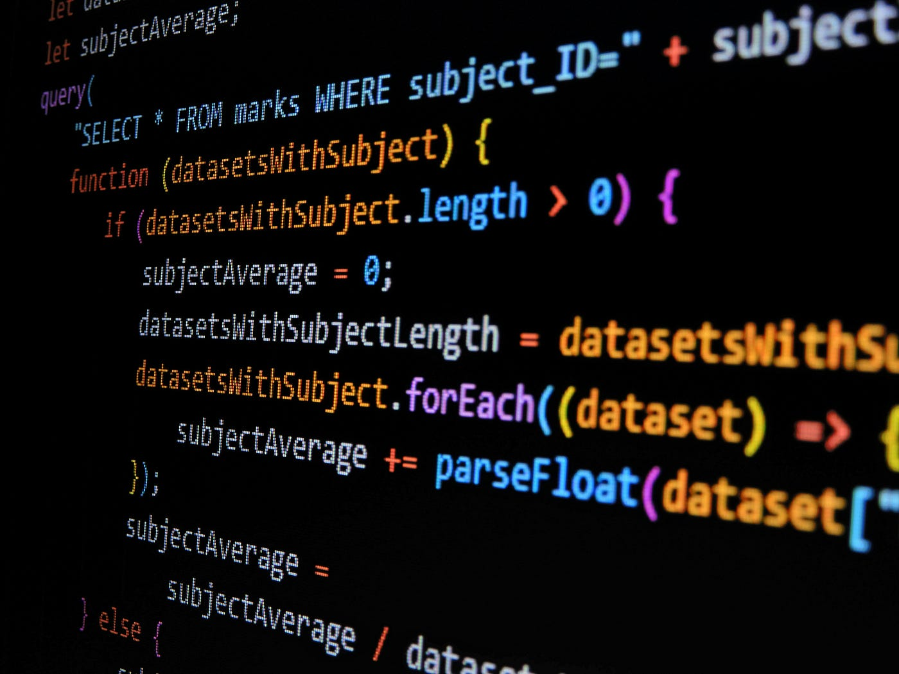
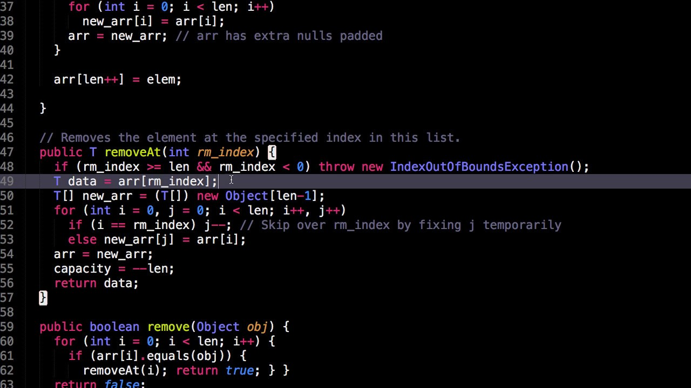

Wat is een array?

Een array is een speciale variabele die meerdere waarden kan bevatten.
Deze waarden staan in een vaste volgorde en hebben een **index**, beginnend bij 0.
Bijvoorbeeld: const kleuren = ["rood", "blauw", "groen"];
Waarom arrays gebruiken?

Arrays maken het makkelijker om lijsten van gegevens te beheren.
Zonder arrays zou je voor elke waarde een aparte variabele moeten maken.
Bijvoorbeeld: in plaats van let kleur1, kleur2, kleur3, gebruik je één array kleuren.
Array voorbeelden
const kleuren = ["rood", "blauw", "groen"];const namen = ["Anna", "Bram", "Celine"];const cijfers = [10, 20, 30, 40];
Je kunt een specifiek item ophalen via de index: kleuren[0] geeft "rood".
Itereren over een array
Je kunt door alle items van een array lopen met een for-loop:
const kleuren = ["rood", "blauw", "groen"];
for (let i = 0; i < kleuren.length; i++) {
console.log(kleuren[i]);
}
Dit toont elk item in de console.
Interactief: voeg zelf een kleur toe!
Type een kleur en klik op "Toevoegen" om de array uit te breiden:
Array: